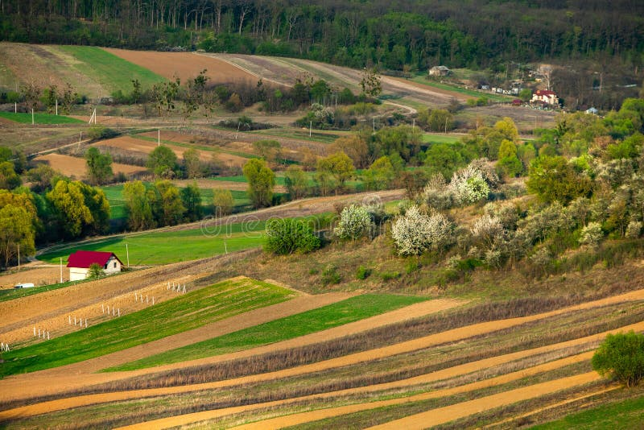
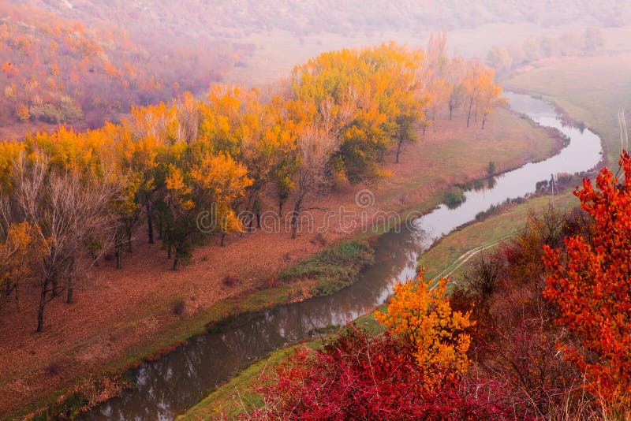

Seasons in Moldova
Spring
Spring in Moldova (March-May) brings mild temperatures between 10-20°C and colorful blooming landscapes.
Summer
Summer (June-August) is warm and sunny with temperatures ranging from 25-30°C, perfect for exploring vineyards.
Autumn
Autumn (September-November) features colorful foliage and temperatures between 10-20°C, ideal for harvest season.
Winter
Winter (December-February) brings snow and cold with temperatures ranging from -5 to 5°C.
Current Weather
Select a city to see current weather information